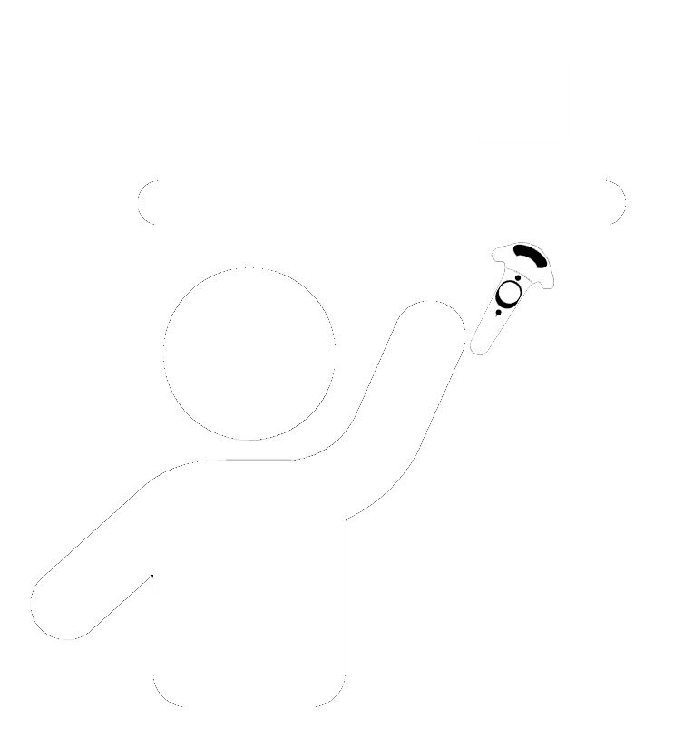

Challenges of implementing Accessibility in a Digital Twin in VR of a Chemistry Lab
Christian Cousquer
Ilargia Inc.
A11yVR - December 2023
Slides
Agenda
The Saturn 5 Rocket launch in background.In this Presentation, I do hope you will learn:
- Strategies for designing and managing Digital Twins in Virtual Reality (VR) for Learning ,
- Strategies for pedagogically scripting VR Content, and addressing XR Accessibility Challenges,
- Discover a VR Digital Twin of a Chemistry Lab: from CAP'VR and JENII Projects to Mimbus Chemistry,
- Learn when to use VR content in your teaching.
- Improve your skills in Frenglish.üòú
Introduction
A photo of John F. Kennedy speaking in public in background
Christian Cousquer
- More than 17 years in the field of Digital Accessibility
- A11y & XR Consultant - Ilargia Inc.
- National Direction of digital uses (Le Cnam - DN1).
- ICT Expert, XR Projects Manager
- XR Specialist, A11y Specialist.
- formerly Comedian.
- Email : christian.cousquer@ilargia.eu
- Twitter : @prairycat
The National Conservatory of Arts and Crafts (Le Cnam)
Major public higher education institution specializing in lifelong higher vocational training.
Founded by Grégoire Abbot in 1794
This is the very heart of our institution. We're going to insist on these two terms “everyone” and “everywhere”...
What is a Virtual Reality Digital Twin for Learning?
In this video of Mimbus Chemistry, you can see the point of view of a user entering in the Virtual Chemistry Lab. perfoming chemical Experiments, fixing endangerments, learning Chemistry procedures
Virtual Reality: a powerful teaching medium
VR can offer a far more visceral experience than traditional screen-based media. It can appeal to the user's spatial memory, give them a sense of scale and, in many cases, serve as an emotional amplifier and memory of the experience.
This interactive component has its advantages and disadvantages. Striking a balance between immersion, ease of use, accessibility and experience is the main challenge of VR design.
"2 Students in immersion in the Chemistry Lab during an immersive practical work Session."
Immersive practical courses
We need to differentiate between virtual and immersive practical sessions. A virtual practical session can be a 3D animation on a screen.
An immersive practical session uses a virtual reality headset.
Active teaching: Spect-actor
The virtual reality headset creates the sensation of being transported to another world.
Did you say Immersive Learning?
© J. Leborgne - i2L
A diagram: In "immersive Learning there is a hidden word: Interactivity. Immersive refers to immersion plus body in action that give active presence of the learner. Learning refers to apprenticeship plus feedbacks that give learning Trace, which goes to Analitycs. between body in action and feedbacks there is "interaction, interactivity" : it is because there is interactivity beetween the two that the body in action have feedback and vice versa.
How to design?
Focus on your plan.
A Saturn 5 rocket plan in background
Defining a strategy
John Houbolt, engineer who fought for moon landing method
VR module Design Strategy
A baby step-by-step strategy.
Each stage of the rocket project must benefit from the previous stages of the rocket project, both from an educational and a project management point of view.
Overview by way of example: CAP'VR project phases for the Chemistry laboratory
Two Cnam partners on CAP'VR project:
- Mimbus for the development,
- i2L for teacher acculturation to VR.
- Starting Phase
- Requirement Phase
- Developpement of 3D Graphic Phase
- Acculturationto VR of the Teachers
- Screenwriting of the firt VR module Phase
Request scoping phase
Apollo Engineers discussing around a table
Each Digital Twin has its own pedagogical objectives and specificities.
And therefore their own techniques and management phases...
The CAP'VR Chemistry Laboratory focuses on the learning of professional skills.

Specifications
- Tutorial for learning how to use controllers
- Learn the skills gestures and processes involved in chemistry,
- Focus on the teaching scenario, the technique will follow. The interactivity component is fundamental.
- Realistic environment,
- Full internationalization (i18n) in French, English (and Spanish),
- Focus on usability and accessibility (a11y) wherever possible.
A multi-stage Rocket
Organizational aspects: Let's organize ourselves into "Teams of Teams"
Collective intelligence
- Perception of the whole / Holoptism,
- A shared identity (feeling of belonging to a group),
- A social contract,
- Rituals,
- Common goals,
- Gift economy ("I don't keep things for myself" - idea of sharing),
- Circulating object-links (something in motion within and between members)
- Learning organization
ref.: jean Noubel
VR Acculturation Phase
2 Apollo Astronauts are in training on Earth near a replica of the Command lunar Module
A VR project is first and foremost a writing process
- A content expert, a teacher, no matter how talented, if he or she doesn't know virtual reality, if he or she isn't acculturated to it, won't be able to produce anything in VR.
- On the other hand, VR content producers often have no expertise in educational scripting, or in the progression of knowledge/skills acquisition.
- In VR, everything must be formalized in writing: example: Cap'VR specifications => 300 pages
- Scenario, scenography, storyboard, design-thinking...
A content expert needs to know :
- Identify the impact of XR, VR and AR in career guidance and training.
- Understand the specific terminology of immersive learning.
- Identify the processes required to implement an action using virtual reality.
- Understand the nature of immersive mediums, and the physiological, psychological and cognitive mechanisms on which they are based and which underpin their effectiveness.
Lift-off:
First stage of the rocket:
Defining the virtual environment
The Launch of Saturn 5 rocket
Create a first virtual tour module
with tooltips and the dangers addressed by some equipments
Then, a module for the identification and characterization of the environmental equipments
A kind of treasure Hunt, more difficult, pedagogical progression, the learner must now identify and characterize what he has discovered in the first module.
Second Stage of the Rocket:
Make small reusable modules
Make small safety procedures Learning Modules with virtual endangerments
One of the strengths of Virtual Reality is its ability to reproduce dangerous situations in complete safety.
Break down procedures into step-by-step scenarios with branches (over-accidents)
Finding a common language between technique, content expertise and pedagogy
A part of a BPMN Diagram, where every actions are decomposed into unit tasks.
Third stage of the rocket:
make modules that can reuse previous modules
Make more complex modules (Chemical Experiments)
in which you can replay the small safety procedure modules at any time
interactivity Challenges:
Solving unexpected problems and addressing accessibility
Specificities of Virtual Reality development
Do not try to reproduce reality at any cost, find metaphors while always focusing on usability and accessibility.
Work with simple questions:
- How do you empty or collect contents from a container with a spatula when you have VR controllers in your hands?
- How do you wash a dirty spatula?
- Dealing with flexible hoses in VR?
How do you empty or collect precisely contents from a container with a spatula or a syringe when you have VR controllers in your hands?
When something can be done in 2 secondes in real life, it must be done in 2 or 3 secondes in Virtual Reality.
todo
Accessibilty in XR
Accessibility means enabling people with disabilities to fully enjoy their rights and fundamental freedoms, by removing any barriers they may encounter. Digital accessibility is part of this approach to equality, and is an essential political and social challenge to guarantee equal access to information, training and online services for all, without discrimination.
Digital accessibility in XR is a field of research.
It's a combination of web accessibility and video game accessibility, each with its own specificities.
XR Accessibility User Requirements (XAUR) & BBC XR Barriers Research & XRAccess:

Provide your users a Tutorial
In order to familiarise the user with the available interactions, a tutorial scenario can be launched from the module selection menu.
The aim of the tutorial is to teach the user the commands of the virtual reality equipment and the different metaphors used in the application in a clear and progressive way. It will take place in a neutral and uncluttered environment so as not to distract the user from the various actions expected.
The tutorial is presented in the form of successive themed rooms, which the user will have to validate one after the other:
- Moving around
- Grabbing and moving an object
- Interacting with an object
Provide your users different difficulty Levels
A beginniner mode, an Advanced mode and an Expert mode
Addressing hearing
Every spoken instruction by a voice-over is reproduced in writing on a wrist-mounted tablet.
A Deaf student was able to pass all her exercises in a practical immersive Chemistry Session
Addressing motor impairment

All Chemistry modules can be completed in a wheelchair.
When an object falls to the ground, it can be picked up without bending down thanks to a magic grab laser.

Addressing Colorblindness and dislexia
We have in our VR simulations 3 possible actions with the handcontrollers:
- teleportation, which we associate with the purple color (1st room),
- Grab an object, that we associate to the blue color (2nd room),
- activate an object, which is associated with the color yellow (3rd room),
The choice of these blue and yellow colors was made because a person having color blindness, will always distinguish yellow from blue.
But we realized that about ten-ish percent of our students confusent their index finger with their middle finger on their hand. üòÖ We imagined some "magic rings" that would associate the right color and therefore the action to the right finger.
The third option are the filters of colors according to the type of color blindness: protanopia, deuteranopia and tritanopia which change completely the colors of the environment (and the rings also...).
The last option addresses dyslexia by changing the fonts for adapted fonts
Color blind users may need to be able to customise the colors used in the immersive environment. This will help with understanding affordances of various controls or where color is used to signify danger or permission.
Addressing Colorblindness part 2
The informations must not be given only by color
todo
Things to come in Accessibility
Adressing the Proteus effect
The Proteus effect describes a phenomenon in which the behavior of an individual, within virtual worlds, is changed by the characteristics of their avatar.
Well, we've got a Protheus effect in the lab: women with virtual male hands have strangely brusker gestures... So we we want to give the hability to the users to choose between male and woman virtual hands.
Suggest an alternative to holding down keys
One click to grab, second click to release
Give the user the ability to modify their input preference or use a variety of input devices.
The remapping of keys used to control movement or interaction in virtual environments is more complicated than it seems because it involves modifying the entire experience dynamically, including the tutorial, according to user preferences.
Striking a balance between immersion, ease of use and experience is the main challenge of VR design.
All these Accessibility settings have been built by, tested with, and for people with disability ✅
And we are also testing every module with young kids for usability
To see without any help, if a boy or a girl can do them.
Here, we are testing the ease of use and the understandability of the Lab exercises.
Uses in Classroom
Uses and positioning of VR educational modules in existing curricula
VR for which disciplines? To develop which skills?
Learning of professional gestures in technology, hard sciences, medicine, life sciences, geology... (non exhaustive list), in VR, you have immersive simulations, VR modules
Learning and acquisition of soft skills in all teaching disciplines using role-playing you deals with Avartars, interview simulations, etc.
Immersive language learning
Immersive visualizations of 3D calculation for Mathematics and Hard Sciences.
Where to place a VR module in an existing curriculum?
Potentially, everywhere...
- In autonomy,
- Upstream of the course
- As a support of a course
- After the course (knowledge renforcement)
- As an evaluation
VR Learning Analytics: Mimbus Vulcan
An opensource VR Learning Management System
Thank you for your attention
Questions?
Navigation
To move from one page to another, use the "Next" and "Previous" buttons.
On mobile devices, you can change pages by swiping the screen:
- from right to left, to go to the next page ;
- left to right, to return to the previous page.
Screen-reader navigation on mobile devices
If you're using a screen reader on a mobile device, these actions are different depending on your software:
- on Android with TalkBack: the action is performed with two fingers on the screen (the two fingers must be spaced far enough apart) ;
- on iPhone with VoiceOver: double-tap and hold for a few seconds, then swipe left or right.
- If these actions are not effective, you need to return to the top of the page to reach the "Next" and "Previous" buttons.
Keyboard navigation
| Key | Action |
|---|---|
| CTRL + Space | Next page with the latest version of NVDA or JAWS 18 |
| Space or Right Arrow | Next page in all other cases |
| SHIFT + CTRL + Space | Previous page with latest version of NVDA or JAWS 18 |
| Shift + Space ou Left Arrow | Previous page in other cases |
| Start | First page |
| End | Last page |
| ALT + 0 (zero) | Contents |
Accessibility options
AccessReader offers several accessibility options that can be configured in the "Configuration" pane.
Dyslexia
For greater reading comfort, check the "Adapted font" and "Adapted line spacing" options.
Contrast
AccessReader propose trois niveaux de contraste :
- default ;
- inverted ;
- enhanced.
Vocalization
In the "Accessibility" section, you can select different sound options.
You can choose which actions will trigger a beep (each beep is different depending on the action):
- Page: beeps when you reach a new page
- Start: beeps when you reach the first page
- End: beeps when you reach the last page
You can also select additional elements to be vocalized:
- Number: vocalizes the page number when displayed
- Title: vocalizes the page title when displayed
Title structure
The first level 1 title (h1) encountered on the page contains the title of the presentation medium. This level 1 title remains the same throughout the presentation medium.
Next, each major section of the presentation medium is titled with a level 2 heading (h2).
Within a main section, sub-sections can be titled with level 3 headings (h3) or even lower.
This title structure may seem inconsistent when vocalized: in fact, we sometimes go from an h1 to an h3, or even to a lower-level title. Nevertheless, it remains consistent throughout the document, and perfectly valid in terms of the HTML 5 standard.
Furthermore, when you're in a sub-section, a clickable breadcrumb trail appears after the document header, allowing you to return to the start of the main section concerned if required.